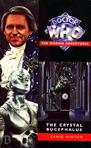

|
The Crystal Bucephalus
|
BASIC PLOT DOCTOR COMPANIONS MATERIALISATION CIRCUIT Pg 176 at the Crystal Bucephalus itself. Pg 219 in the Vortex between the Exemplar and the Crystal Bucephalus. Pg 286 in the Bucephalus again. PREPARATORY READING CONTINUITY REFERENCES Pg 3 Reference to Sontarans. Pg 7 The Bucephalus is located on the planet of New Alexandria. There was a library there in the 27th century, according to the short story Continuity Errors in Decalog 3, which is built, at the sixth Doctor's suggestion in the Decalog 3 short story Fegovy. "Why were they always green? he wondered. Green and reptilian. Martians, Chelonians, Earth Reptiles, Draconians... no variety." This refers to Terrance Dicks' assertion in More than 30 Years in the TARDIS that the colour for monsters is green. The monsters referenced themselves are The Ice Warriors (from The Ice Warriors, The Seeds of Death, etc.), Chelonians (invented by Gareth Roberts and initially appearing in The Highest Science), Earth Reptiles (the politically correct term from the Silurians and the Sea Devils) and the Draconians (Frontier in Space). Pg 11 "The slightly older one [the Doctor] was attired in a jacked of deep blue with a silver snake motif." The Doctor's choice of clothing is perhaps a little insensitive, given Tegan's recent experience with the Mara in Snakedance. Pg 19 "Even after nearly three years of traveling with the Doctor - three years of Cybermen, Terileptils... Mara!" Earthshock, The Visitation, Kinda and Snakedance. Pg 20 "That really is quite a disgusting habit, you know. You should try giving up. I haven't touched tobacco for four incarnations." The Doctor was seen smoking a pipe in An Unearthly Child (or 100,000 BC, whatever you want to call it). Pg 21 "I'm a Time Lord, not a bank manager" is the first of many woefully ill-advised Star Trek in-jokes that pepper the narrative. Pg 23 "'Ah, Earl Grey. Hot.' He grinned. 'I recommend it to all my friends'" is the next of these. Pg 25 "'I doubt that the Brigadier taught that at Brendon School'" Turlough met the Doctor there in 1984 in Mawdryn Undead. Pgs 25-26 "He wasn't amused. 'Don't patronize me, Doctor. I'm not one of those Earthlings that you usually surround yourself with. Or are you forgetting just who populated my planet in the first place?'" Turlough and the Earthlink Dilemma. The people who populated his planet "in the first place" were the Laima (aka Slots, he finds out later) who had also developed time travel. [With thanks to Jay Demetrick.] But see Continuity Cock-Ups. This is possibly another hint (see Goth Opera) that Gallifrey no longer exists and furthermore that Turlough's people actually inhabit the planet that used to be Gallifrey (events in Alien Bodies and The Ancestor Cell would seem to rule this out, however...). Pg 27 The Doctor mentions Ben, companion between The War Machines and The Faceless Ones. Pgs 27-28 It's not continuity again but "It wasn't as if a 5,000-year old religion was going to be particularly important, was it?" is such an appallingly bad way of trying to put the reader off the scent, I felt it deserved a special mention all of its own. Pg 35 "The Doctor thought fondly of the control room he had designed along the same lines as the Grid Control Suite, where block transfer computations and dimensional engineering were translated into a symphony of stained glass, brass rails and stained oak. Well, he'd liked that sort of thing once." This is the Season 14 console room, first seen in The Masque of Mandragora. Block transfer computations were introduced in Logopolis and pop up a lot during this book. "Whitaker's time scoop, Findecker's double nexus particle and Blinovitch's chronal displacer." Invasion of the Dinosaurs, The Talons of Weng-Chiang and Day of the Daleks/Mawdryn Undead for the main appearances of these particular temporal genii. "Exitonic circuitry" Mentioned in The Deadly Assassin, as being child's play to the Master. Pg 37 "Mankind, such an indomitable species" This is the Doctor thinking about the speech he made in The Ark in Space. "And then there was Ruath, the Master, Omega himself..." Goth Opera, too many to mention and The Three Doctors and Arc of Infinity, in that order. Pg 40 "The Doctor had a vague memory of the CIA sticking their oar in - oh yes, Mortimus, wasn't it?" Mortimus appears to be the formal name of the Meddling Monk, from The Time Meddler and the NA alternate universe arc that concluded with No Future. The CIA were first mentioned in The Deadly Assassin. "I'm Professor Alexhendri Lassiter." Real soft-continuity here, but note the similarity of name to Mehendri Solon in The Brain of Morbius. Pg 43 "Turlough had had his fill of hypocritical religions on Trion." Turlough and the Earthlink Dilemma. Pg 44 "His first-hand knowledge of the race was limited: he had met a Legion briefly on Earth in the 25th century, just before the Second Dalek War." The reference to the Doctor meeting a Legion before is an unrecorded adventure, although he would later go on to meet one in Lucifer Rising. The Second Dalek War was presumably connected to the events of Frontier in Space and Planet of the Daleks. Pg 45 "The Blinovitch Limitation Effect, or so I'm told. An hour here in the Bucephalus is equivalent to an hour in the target time zone." Blinovitch as mentioned above. It should also be noted that this ties in with the explanation as to how two separate but linked time-zones work as given in The Sands of Time, although here it seems to be for convenience rather than an actual physical law. Pgs 52-53 "'Katarina, Sara, Adric and now Turlough. Innocent lives that I drag into my endless games. Innocent lives that I sacrifice for the games I play with time and space.'" This dreadful speech name-checks the companions that have died in the Doctor's company, in (respectively) The Dalek Masterplan, The Dalek Masterplan and Earthshock. Pg 59 "'Definitely an infarction.'" Infarctions are mentioned in The Quantum Archangel as well. Pg 71 "'It's worse than the great Birastrop Stampedes.'" Morbius ended up with something that belonged to a Birastrop in The Brain of Morbius. I believe that the Birastrop has a respiratory bypass system. Tegan thinks about the fate of Aunt Vanessa from Logopolis. Pg 72 "'"Highest echelons"? "Highest echelons"?' The Doctor's face was only inches from the Maitre D's." This repetition of something that annoys him, suggests that the Fifth Doctor is currently channeling the Sixth. Pg 75 "'Rutan prawns with garlic mayonnaise, followed by...' Second cover. 'Ah, how delightful: dodo in what seems to be a hollandaise sauce.'" This is presumably a joke on the fact that Rutans, as seen in Horror of Fang Rock, look rather prawnish. It is to be assumed that the dodo being eaten here is the extinct species from Mauritius, and not the former companion of the Doctor (The Massacre to The War Machines), although given what happened to her in Who Killed Kennedy, we perhaps should not be so sure. I wouldn't advise eating her, though - she's got a nasty disease (The Man in the Velvet Mask). Pg 78 The Doctor hypnotizes a nurse, as the Fourth Doctor was often seen to do (although not always with nurses) early in his career. The sequence is also reminiscent of the 'There are not the droids you're looking for' moment in Star Wars, which is slightly annoying. Pg 83 A genetic experimentation project took place on Tersurus from 6198 onwards, until destroyed by an earthshock bomb in 6211. Tersurus is where the Master ended up, having been attacked by Susan in Legacy of the Daleks, and from where he was rescued by Goth in the run-up to The Deadly Assassin. The earthshock bomb, presumably, is of the same sort that the Cybermen intended to use in Earthshock. Pg 92 Not continuity, but an award for the most unusual collective noun in Doctor Who should probably go to "an orgasm of connections and reconnections." That's not one you're going to find in an everyday lexicon. Pg 95 has Tegan reminiscing about The King's Demons, which she dates as happening a couple of days previously in her timeline. Pg 100 "The Doctor looked down at the serpentine motif. He had been so touched when Professor Litefoot had given it to him." Professor Litefoot appeared in The Talons of Weng-Chiang and would go on to rejoin the Doctor in The Bodysnatchers. Pg 103 "'No, the Chen dynasty put an end to that.'" This refers to Mavic Chen, Guardian of the Solar System in The Dalek Masterplan. Pg 104 "Turlough remembered reading about the effects of plasma damage on the biosphere of Qo'noS." Despite the strange capitalization, this is another annoying Star Trek reference, Qu'nos being one of the names for the home planet of the Klingons. Pg 105 The Time Lords had imprisoned the Legions in much the same way they did the War Lord's people in The War Games. Pg 108 "'Jethryk is vital for power and the galaxy's entire technology is based on trisilicate.'" Jethryk was clearly very valuable in the Ribos Operation, and one part of the Key to Time was disguised as said mineral. Trisilicate was mined on Peladon, amongst other places, in The Monster of Peladon. Pg 112 "There were few races in the cosmos with the time sensitivity necessary for the operation of the Bucephalus. Legions, of course; Tharils, Chronovores, their cousins, the Eternals, the Transient Beings and, of course, the Time Lords." Tharils were in Warrior's Gate, Chronovores in The Time Monster and No Future. The Eternals as mentioned here appear to be the ones from Enlightenment and not the eternal concepts of Time and Death that appear in so many NAs. The Transient Beings are from Sapphire and Steel, and we should all really know what Time Lords are by now. Pg 114 "I mean, for five thousand years, since that business with the Dalek Civil War, no one had heard a thing [about the Time Lords]" This ties in with the Doctor's desperation not to have his activities noticed during Frontios and, given the dating, the Dalek Civil War is likely one from Evil of the Daleks. Pg 118 "Our Professor Lassiter has found himself a Time Lord, of all things.' 'Aren't they all dead or something?'" The Virgin philosophy was that Gallifrey existed at the beginning of time, and this is consistent with what is said in Goth Opera. The Time Lords all being dead is consistent with the events of The Ancestor Cell, changed following The Gallifrey Chronicles and is then the status quo in the new series. Pg 119 "'Time for a mind probe.'" The Doctor must be getting used to these by the time one is mentioned in The Five Doctors. Pg 120 "He was familiar with the Time Vortex, but seeing it through the TARDIS scanner, or swimming through it when connected to a TARDIS Vortex shields." The latter happened in Shada (and this explains how that could have happened). That said, if you believe the audios, Shada hasn't happened yet. Pg 121 "She hurled her arms outwards. 'Maximum power!' she yelled." Ladygay is impersonating Servalan, from Blake's Seven, complete with arm gestures. Servalan was played by Jackie Pearce, who appeared in The Two Doctors and Death Comes to Time. Pgs 128-129 "It seemed years since she had persuaded the Doctor to make a slight detour from the Eye of Orion." The Eye of Orion was where the TARDIS crew begin The Five Doctors. With this and the reference to The King's Demons, Hinton has ensured that this book can be the only one inserted between these two stories. Pg 129 "'You've just eaten with English royalty. Sort of.'" The King's Demons. Pg 133 "Too right; looks like something out of Star Trek." Hmm. "And two hundred years later, Commander David Jarvis would have sat on the bridge of the Colonial warship Dauntless, in the middle of the battle of Cassius, where he would disregard orders and fire the decisive volley that would end the Dalek blockade of the Solar System. This is fallout from The Dalek Invasion of Earth. The Dalek blockade will be later seen in GodEngine and battle of Cassius is mentioned on page 200 of The Dark Path. A Dalek blockade of the Solar system around 2180 is mentioned, presumably fallout from The Dalek Invasion of Earth. The Dalek blockade will be later seen in GodEngine. Pg 138 "Over the centuries, he'd picked up a vast armoury of such diagnostic techniques, ranging from the id-ego balancing tenets taught by his hermit on the hill to the skills of the Mind monks of Darron." The former appears in Planet of the Spiders. The latter is an uncertain reference. Blinovitch is name-checked again. Who'd've thought that one line of dialogue in a Dalek story would have such far-reaching consequences. Blinovitch is blamed for practically everything these days. Pg 142 "He remembered the historical documentation about cyberspace and virtual reality, a passing fad that everyone had rapidly got bored of." This seems to be a dig at the early NAs, which mostly entered VR to conclude the plot. Pg 154 "We're going to have to take our chances here. When I say run, run." This Second Doctor catchphrase is uttered here by Tornqvist. If nothing else, it makes it clear how much he's functioning as a Doctor substitute at this point. Pg 156 The mob have 'blazing torches'. How wonderful. A similar mob have this in Goth Opera and numerous films from the seventies. Are there no other adjectives for torches? Pg 159 A character called Kamelion appears. Hang on, I remember that name from somewhere... "I was in the Cloister Room." Which appeared in Logopolis, and numerous books since. Pg 162 "Most of the aliens were unfamiliar to Tegan, although she did recognise a disembowelled Cyberman and a Terileptil with its hands chopped off, as well as the three-eyed thing she'd seen earlier" Earthshock, The Visitation, an Earth Reptile. Pg 164 "After an interminable time in what Turlough called the wardrobe room..." Seen in The Twin Dilemma and Time and the Rani, for which I am sure the Wardrobe Room would like to apologise. The Ooolatrii are mentioned, but I am uncertain if this is a reference or not. Pg 165 "[Turlough] looked faintly perturbed. 'I think I might have miscalculated.'" He unconsciously echoes the Seventh Doctor, who will repeat his words in Remembrance of the Daleks. Pg 172 includes another list of temporal theorists, who are mentioned on and off throughout. Just to be clear, Blinovitch and Findecker are TV (Day of the Daleks, The Talons of Weng-Chiang), whilst the others are created for this book. Pgs 172-173 "What a pity that you spent so much time near high-energy sources that you gave birth to a mutant, a mutant with the body of a thirty-year-old and the mind of a retard. How tragic." OK, again not continuity, but this must qualify for the J Michael Straczynsky award for the worst piece of expository dialogue ever. Pg 174 "Tegan recognized it from a number of previous encounters, ranging from a children's book of astronomy to the image on the TARDIS's scanner when the Master had sent her and Nyssa back to Event One, the creation of the galaxy itself." In Castovalva. "That blue chunk is the Union, while the green section bordering it is the Draconian Republic. There you have the Cyberlord Hegemony, the radioactive remains of the Sontaran Empire." Draconians (Frontier in Space), Cybermen (The Tenth Planet etc.) and Sontarans (The Time Warrior etc.) Note that the last of the Cybermen, as has been extrapolated from the televised adventures, appear to have died out around Voga in the 26th Century. Clearly this assumption was wrong. There is nothing wrong with suggesting that all the Sontarans are dead by now, but it gives us interesting fuel for the exact date of The Infinity Doctors. Pg 175 Turlough recalls Brendon High and the Brigadier, both from Mawdryn Undead. Pg 180 "Lassiter threw the Laserson probe at the nearest wall of the grid control suite." In The Robots of Death we are told that a Laserson probe can punch a six-inch hole in armour plating or take the crystals from a snowflake one by one. "Perhaps they'd abducted him [the Doctor]: taking him back to Gallifrey to face the consequences of his inactions." Not quite what happens to the Doctor in The Trial of a Time Lord, but only out by one syllable. Pg 188 "He'd been in Cubiculo 498, enjoying coffee and liqueurs with Senator Xavier on Risa" is another annoying Star Trek reference. Pg 191 "It's a jablecta, the sacred weapon of the Tharil Antonine Killers." Tharils appeared in Warrior's Gate and were mentioned again, as Romana left them, in Blood Harvest. Pgs 197-198 A brief history of Kamelion's life includes his creation (as related in The King's Demons), his kidnap by the Master and subsequent rescue by the Doctor (The King's Demons), the fact that his shapechanging relies on Block Transfer Computation (as pioneered in Logopolis) as well as his fear of the Master's TCE, which will eventually cause his destruction in Planet of Fire. Pgs 199-200 "Seeing the innocent members of Victor Lang's New Light organization burning and screaming as they fell victim to vampires had made her realize that faith was a tangible, measurable thing that people could rely on. And she had discovered her own reserves of faith after her soul had been raped by the Mara." Goth Opera, Kinda and Snakedance. Pg 214 "[Tegan] had managed to move it [the TARDIS] outside the Urbankan ship" In Four to Doomsday. Pg 215 "'Unless, of course, we want to learn about black holes from the inside.'" Been there, done that, in The Three Doctors, and (possibly) The Infinity Doctors. Pg 219 "She had brought up all the available information in the wrecked TARDIS discovered in the Terran asteroid belt twenty years ago." The wrecked TARDIS is Galah's from Strange England (with thanks to Bob Dillon). "'These should be the Helmic Regulators.'" Harry messed with these in The Ark in Space. Pg 222 "'You know it's times like this when I really miss my sonic screwdriver. I should have sued the Terileptils for criminal damage.'" It was destroyed in The Visitation, but he has replaced it by The Nightmare Fair and certainly by The Pit, although has lost it again before Lungbarrow, because Romana gives him hers. The Doctor says this in Millennial Rites as well, but by GodEngine says he successfully sued the Terrileptils, which was how he got a new one. Pg 227 "If you say "brave heart" to me once more, I'll hit you." The Doctor says this lots to Tegan, and it's important in The Caves of Androzani. Pg 236 The Cloister Bell rings. First heard in Logopolis, and numerous times since then (but see Continuity Cock-ups). Pg 240 "'I thought I'd piloted the TARDIS to Castrovalva, but that turned out to be Adric's doing, and I managed to take off once.'" Tegan's attempts at piloting the TARDIS in Castrovalva and Four to Doomsday. Pg 245 "She recalled the terrifying incident a week or so ago, when Nyssa's bedroom had started to dissolve." Terminus. Pg 246 Tegan contemplates the Mara again. Pg 249 The Sontarans and Cybermen are name-checked again, along with the Rutans who, until that point, had avoided a mention (except as a culinary delicacy). Pg 253 "The Search for the Double Nexus - the Collected Works of Ernst Findecker: 4912-5010" The Talons of Weng-Chiang. Pgs 253-254 "'What magnificent artifice: archaic books containing out-dated trionic lattices.'" Trionic lattices are mentioned in The Talons of Weng-Chiang. Pg 256 "'3.1 on the Bocca scale and rising.'" The Bocca scale, of temporal disruption, is first mentioned in The Two Doctors. Pg 257 The Tersurus Institute is presumably based on Tersurus. Whilst the events of this book have no connection to these following events, Tersurus is where Chancellor Goth found the Master before The Deadly Assassin, after said evil genuis' run-in with that vicious Time Lady, Susan, as seen in Legacy of the Daleks. It was also seen in The Curse of Fatal Death. Pg 260: "The Symbiotic Nucleus: Rassilon's Triumph" The Two Doctors. "The Triple Helix: The Inheritance of Rassilon" Rather more obscure, but related, presumably, to Rassilon's wholescale rewriting of Time Lord DNA as mentioned in Cats Cradle: Time's Crucible. The triple helix is also mentioned in The Quantum Archangel (pg 256). Pg 264 "'But I still remember the words of my tutor, Borusa.'" Borusa was the Doctor's tutor at the Academy, as revealed in The Deadly Assassin. Pg 266 "Tegan recognized the void from her escape from Ruath's TARDIS - the Time Vortex" As seen in Goth Opera. Pg 268 "Definitely raging against the dying of the light" is not a Who quote, but refers to Dylan Thomas' poem, 'Do not go gentle into that good night'. Pg 280 Kamelion comments that Turlough's full name and rank are 'Junior Ensign Vislor Turlough, VTEC 9/12/44' as will be later revealed in Planet of Fire. Pg 282 "Kamelion formed his lips into a silver smile. But he knew that it would take more than that to convince Turlough and the others of his good intentions. Especially with that dark, cackling voice that echoed in his mind." The Master's control of Kamelion is still apparent, and this presages what will occur in Planet of Fire. Pg 288 "'The TARDIS?' He gazed at the violated landscape. 'As right as rain, Garrett. Anyway, she was well overdue for a refit.'" The Doctor said as much in Goth Opera, and now it seems pretty imperative. In fact, immediately after this adventure, the crew head for the Eye of Orion, where the Doctor performs said refit just in time for The Five Doctors. Pg 292 "'But where are we going?' 'Where we were originally going: the Eye of Orion.'" Presaging The Five Doctors. Pg 293 "[Kamelion] tugged at his lapels. 'I shall stay in my quarters until I can be sure that I am not a threat to my fellow travelers.'" This explains why Kamelion is not seen again until Planet of Fire. The Doctor speaks of his design refit, including the fact that he will introduce a 'structural integrity field to prevent Cybermen from taking potshots.' They did this in Earthshock. OLD FRIENDS AND OLD ENEMIES Pg 19 Earth Reptiles (Silurians). Pg 44 The Legions (seen in Lucifer Rising) make a number of appearances here, but they don't seem quite so obstreperous as they did in that tale. Pg 45 A Cyberman. Pg 62 "They stood up reluctantly. 'Thank you for your outstanding service,' Tegan peered at the girl's badge, 'Dorothy.'" All right, let's assume the rude girl with the familiar speech patterns is Ace, although travel from Perivale to McDonald's on Tottenham Court Road is a long way to go for the job. Surely Ace could have found somewhere nearer. Pg 176 "The party of Cyberlords in 312 were negotiating a treaty with the Thal contingent." Thals from The Daleks and Planet of the Daleks on television, and War of the Daleks in book form. Pg 178 A Chelonian (The Highest Science etc), The Gubbage Cones (The Chase). Pg 179 Mirebeats (The Chase), an Ice Lord (The Seeds of Death, The Curse of Peladon, The Monster of Peladon) and an Ogron (Day of the Daleks, Frontier in Space). NEW FRIENDS AND NEW ENEMIES Arrestis, also known as Lazarus, sometime Messiah.
CONTINUITY COCK-UPS PLUGGING THE HOLES [Fan-wank theorizing of how to fix continuity cock-ups] FEATURED ALIEN RACES Pg 7 Alpha Cantaurans. Pg 44 The Legions. Pg 45 A Cyberman. Pg 176 Cyberlords (possibly descended from the Cybermen) and Thals. Pg 186 A Hroth with a runny nose. On Pgs 178-179, numerous bizarre alien races appear, including a Chelonian, the Gubbage Cones (The Chase), the silicon Excalbians, the feathered Velopssi, Mirebeasts (The Chase), androids from Exo III, the Lamp People of Badefex (which is an injoke that I do understand) as well as an Ice Lord and an Ogron. FEATURED LOCATIONS The Crystal Bucephalus, a time-travelling restaurant located on the planet of New Alexandria, several years after 10,633AD. Briefly, Turlough goes to Chardon in 4338, to be a guest of the Wine-Lords. Then he is torn apart by the Time Winds. Probably a place to avoid, then. London, in and around Tottenham Court Road, mid-1980s. What appears to be a 13th Century Earth medieval castle is in fact a party on Marmidon. Diadem, the most relaxing planet in the galaxy. Pella Satyrnis, where it's quite cold. But there'll be a really good restaurant there soon. The Cafe de Saint-Joseph, Aix-en-Provence, Earth, 1791. So, the Doctor, Tegan and Turlough went to France mid-the French Revolution dressed as aristocrats. Good choice. Probably best for them that they were removed. The Exemplar, on the moon of Tanthane. Sontara, homeworld of the Sontarans. IN SUMMARY - Anthony Wilson |
|
 |